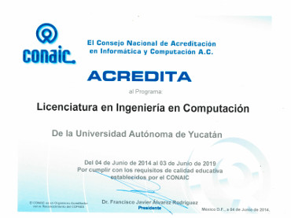

Licenciatura en
Ingeniería en Computación
Reconocimientos
Programa Acreditado por el CONAIC
Objetivos
Este plan tiene por objeto el estudio y desarrollo de la Ingeniería en Computación para el análisis, diseño y aplicación de herramientas, ambientes de programación y aplicaciones que contribuyan al desarrollo de las áreas en las que se aplican. Además, el egresado basará su desempeño profesional en una actitud propositiva y crítica hacia su capacidad para trabajar en equipos multidisciplinarios y en su participación como agente de cambio en entornos multiculturales. Por ello, el objetivo declarado para este PE es:
"Formar profesionales calificados para concebir, diseñar, operar y optimizar sistemas y dispositivos computacionales de software y hardware, mediante el uso de los recursos científicos y tecnológicos actuales, con respeto a las prioridades sociales de desarrollo, equidad y medio ambiente."
Informes
Facultad de Matemáticas
Periférico Norte Tablaje 13615,
Junto al local del FUTV.
Telefónos: 942 31 40 al 49
Horario: 8:00 a 20:00 horas.
http://www.matematicas.uady.mx/
Dr. Gabriel Murrieta Hernández: murrieta@correo.uady.mx
Coordinador de la Licenciatura en Ingeniería en Computación
Perfil de Ingreso
Las competencias deseables, para el perfil de ingreso, seleccionadas de entre las establecidas para el Sistema Nacional de Bachillerato, según el acuerdo 444 de la SEP, son:
- Matemáticas
- Ciencias Experimentales
- Ciencias Sociales
- Comunicación
Perfil de Egreso
Para el logro del objetivo de la carrera se definieron cuatro áreas de competencia:
- Diseño Digital de Computadoras
- Sistemas Embebidos
- Programas de Sistemas Computacionales
- Redes de Dispositivos Computacionales